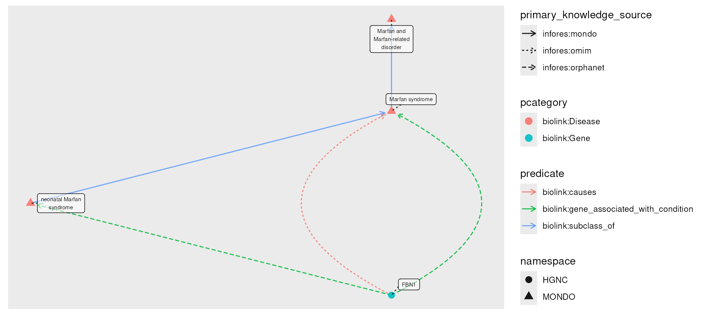
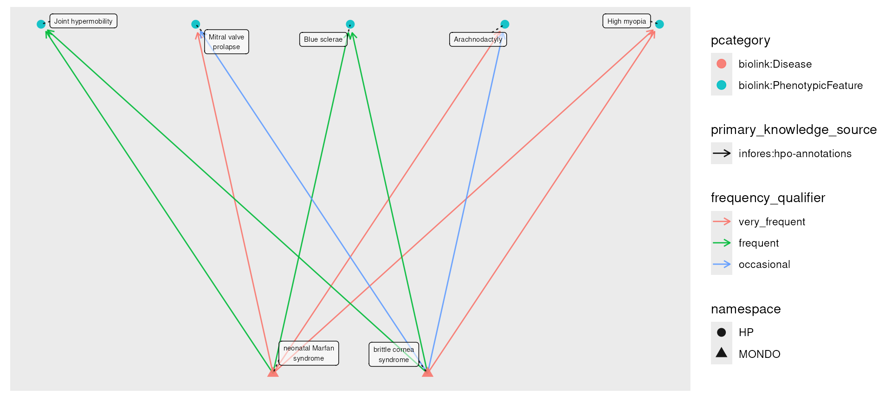

vignettes/examples/visualizing_kgs.Rmd
visualizing_kgs.Rmdmonarchr supports a large number of plotting frameworks
compatible with tidygraph and igraph,
including ggraph, visNetwork,
and threejs.
Included are a basic plot() for knowledge graphs via
ggraph, and a cytoscape() function to export a
graph to a running Cytoscape
instance via RCy3.
As usual, we begin by loading the monarchr package,
along with tidygraph and dplyr which tend to
be useful.
plot()
The basic plot() function is a wrapper around
ggraph. By default, node color tracks
pcategory and edge color predicate, though
these can be changed with the node_color and
edge_color properties.
While node_shape and edge_linetype can also
be changed, they default to namespace (commonly indicating
the node’s data source) and primary_knowledge_source
(commonly indicating the edge’s data source). Here we see that these
nodes are part of MONDO and
HGNC, and the
relationships between them are sourced from MONDO as well as OMIM and Orphanet.
filename <- system.file("extdata", "eds_marfan_kg.tar.gz", package = "monarchr")
engine <- file_engine(filename)
g <- engine |>
fetch_nodes(query_ids = c("MONDO:0017310")) |>
expand(predicates = "biolink:subclass_of", direction = "in", transitive = TRUE) |>
expand(categories = "biolink:Gene")
plot(g)
In this example we first fetch Neonatal Marfan Syndrome, Brittle Cornea
Syndrome, and their direct phenotypes. We then take the join of these
two graphs, compute the degree of each node and filter to only those
nodes with degree > 2, indicating only phenotypes
connected with both. For plotting, we use edge_color set to
frequency_qualifier, but we recode those by their
interpretation. The edge_color and node_color
parameters simply pass their unquoted arguments to
geom_node_point and geom_edge_fan
ggraph layers.
mar_phenos <- engine |>
fetch_nodes(query_ids = c("MONDO:0017309")) |>
expand(categories = "biolink:PhenotypicFeature")
bcs_phenos <- engine |>
fetch_nodes(query_ids = c("MONDO:0009242")) |>
expand(categories = "biolink:PhenotypicFeature")
both <- kg_join(mar_phenos, bcs_phenos)
shared <- both |>
activate(nodes) |>
mutate(degree = igraph::degree(both)) |>
filter(degree > 1) |>
activate(edges) |>
mutate(frequency_qualifier = factor(frequency_qualifier,
levels = c("HP:0040281", "HP:0040282", "HP:0040283"),
labels = c("very_frequent", "frequent", "occasional")))
plot(shared, edge_color = frequency_qualifier)
Tidygraph utilities support easy modification of node and edge tables, breadth- and depth-first maps, and other graph-centric methods, all of which may be visualized in creative ways.
cytoscape()
Local knowledge graphs can also be visualized with Cytoscape, which must be running on
the same machine as monarchr.
cytoscape(mar_phenos)Node color is mapped to pcategory and edge color to
predicate; hoverover node text is description
if available, edge hoverover predicate. All of these and
many more properties can be customized in Cytoscape.